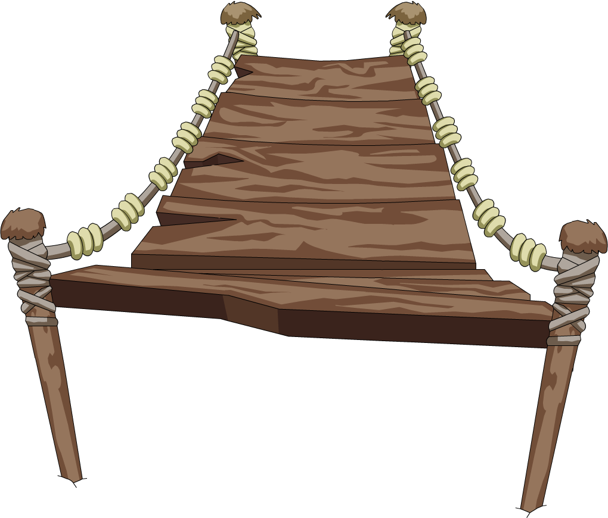

Após patcha e kuzco desviarem da selva e entrarem no caminho para o Palácio, eles passam por uma ponte caindo aos pedaços. Infelizmente os dois caem da ponte presos pela corda. E agora?
1 - Tentam subir juntos lado a lado pelo penhasco.
2 - Kuzco se agarra na corda e tenta subir sozinho sem ajudar Patcha.